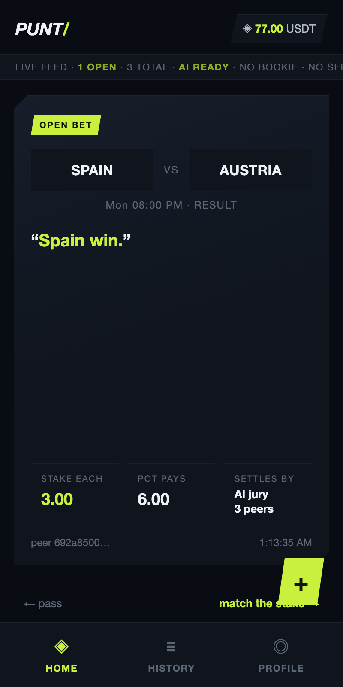
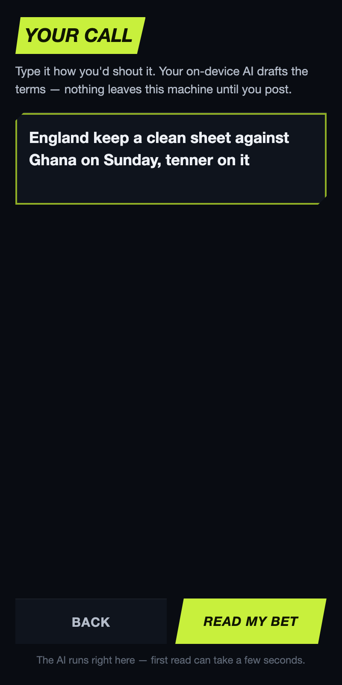
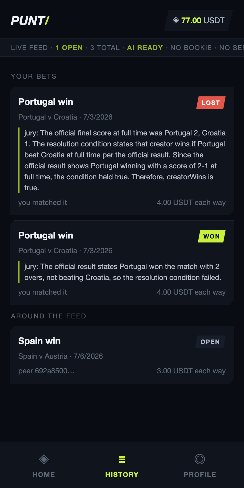
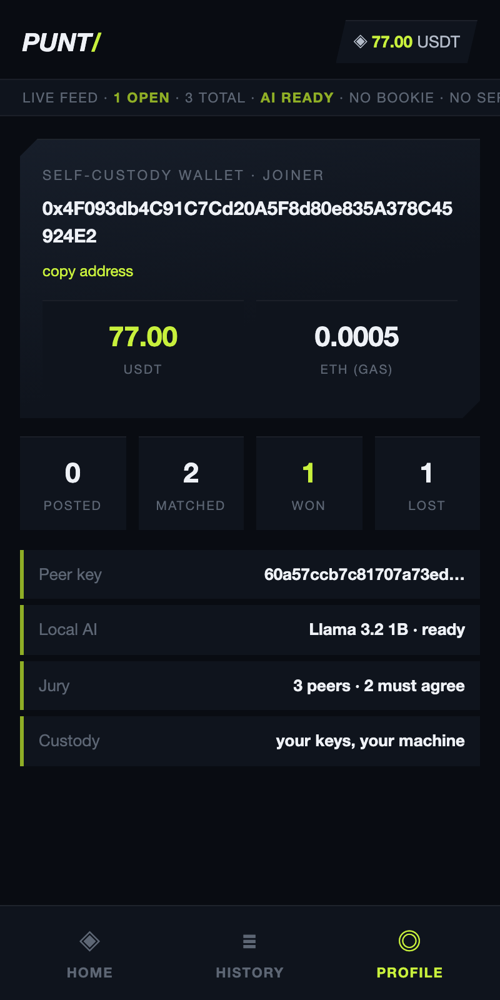

Pears
The feed is the network
Optimistic multi-writer Autobase + Corestore. Remove it and there is no app, because there is no server to fall back to.
TETHER DEVELOPERS CUP
Type a bet the way you’d shout it in the group chat. A friend swipes right to match your stake with real testnet USDT. Three peers grade the result on their own machines. Winner takes the pot.
The whole product is what you can film: two phones, three juror terminals, one escrow pot.
Type plain English. An on-device QVAC model structures the terms and flags anything it guessed. Your stake locks into escrow from your own WDK wallet.
The bet gossips over an Autobase optimistic feed. No API server. No push provider. Their swipe stack updates because the feed replicated.
They match the stake with testnet USDT. The pot now holds both sides on Base Sepolia. Junk bets never get this far: every peer validates the schema first.
Three peers each run a local model against football-data.org results. Two matching signatures settle the contract. The winner’s balance rises by the whole pot.
If you could remove one without breaking the journey, it wouldn’t ship.
Optimistic multi-writer Autobase + Corestore. Remove it and there is no app, because there is no server to fall back to.
Llama 3.2 1B parses plain English. Qwen3 4B grades outcomes at temperature 0. No cloud AI on the critical path.
Every stake movement is signed by the user’s WDK wallet. The escrow is the only thing that ever holds funds.
Broadcast studio navy, electric lime, scoreboard cutouts. What you see here is what ships in Electron.




Settlement needs two of three independent on-device verdicts. Collusion resistance beyond that is out of scope for this prototype.
football-data.org for official match results. A Base Sepolia RPC for chain reads and writes. Everything else, including all AI inference, runs on the peers.
Fixed-stake two-sided pots between friends. No odds-making. No house edge. Framing is peer-to-peer pools, never a betting company.
Node 22+, Base Sepolia ETH for gas, a free football-data.org key. The demo script opens everything.
git clone https://github.com/ajanaku1/punt.git
cd punt && npm install --registry=https://registry.npmjs.org
node scripts/fund-wallets.js
node scripts/deploy.js
npm run demo